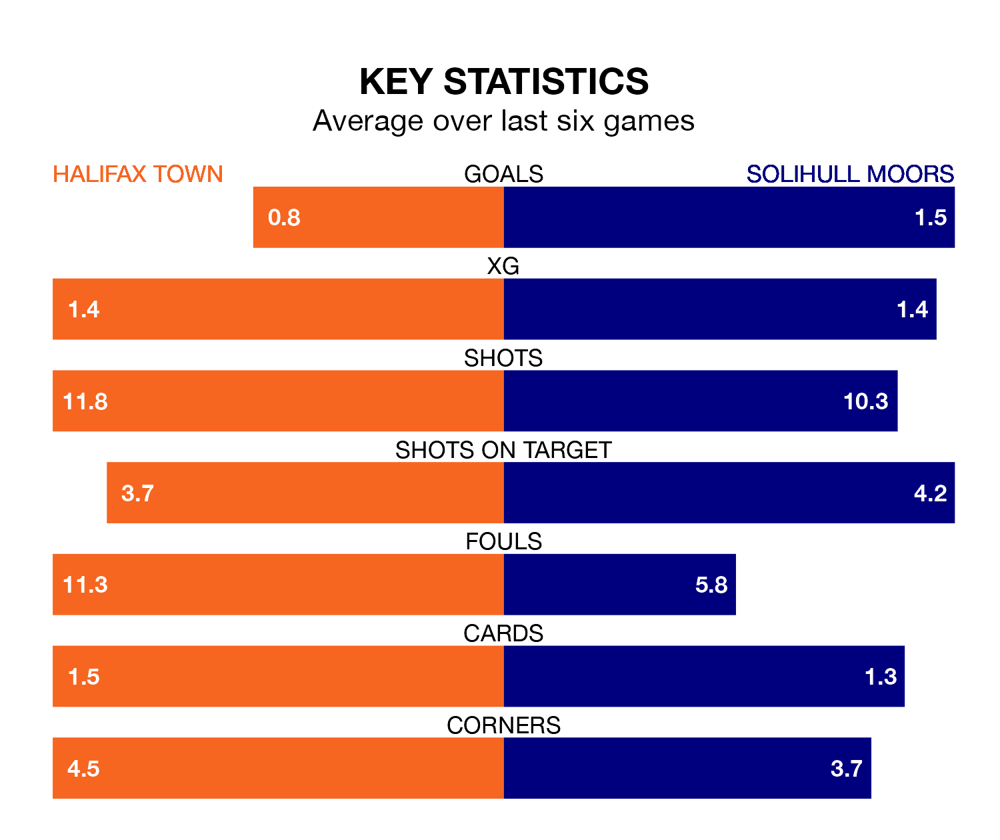

Halifax Town face Solihull Moors at the Shay Stadium on late Tuesday looking to secure a first win in six National League games.
The Shaymen have lost three and drawn two matches since they last earned three points – against Altrincham on December 26.
They face a Solihull Moors side who have won just one and drawn one over that time.
In the last 10 years, Halifax and Solihull Moors have played each other on 14 occasions. Halifax won five of them, Solihull Moors three, and they drew six times.
On average, the Shaymen scored 0.9 goals and the Moors 0.6 in those matches.
Their last meeting was on August 25, when they played out a 1-1 draw.
With 33 goals in 30 games so far this season, Halifax are scoring at below the league average rate with 1.1 goals per game. But they are conceding fewer than average too, letting in 33 goals at a rate of 1.1 per game.
Solihull Moors, meanwhile, are average scorers, with 1.5 goals per game. They have conceded 1.4 goals per game.
The Moors are sixth in the table after 30 games, of which they have won 13 and drawn eight, earning 47 points.
Town are five places behind the away team in 11th, with 10 wins and 11 draws putting them on 41 points.
Halifax's last match was on Saturday, a 2-1 loss against Aldershot Town, with Max Wright getting the goal for the Shaymen.
Solihull Moors lost 1-0 against Altrincham last time out, also on Saturday.
Updated: 10:01 (UTC), 06/02/24